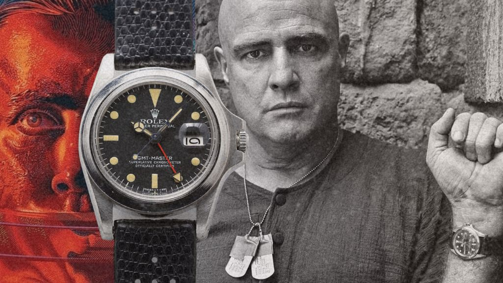

Why did Marlon Brando Wore A Rolex GMT-Master Without Bezel in ‘Apocalypse Now’?

The silver GMT-Master, reference 1675, created in 1972, is almost definitely the most important watch owned by the Hollywood star. It lacks a bezel, has a black display, and a matching strap. The watch, which was thought to be missing for years, is exhibited in the same condition as when the actor gave it to his daughter, Petra Brando Fisher, in 1995. What makes the timepiece even more remarkable is that Brando personally etched "M. Brando" on the case back.
Brando stars in the Palme d'Or-winning picture as Colonel Walter E. Kurtz, a rogue Green Beret who has established his own army in Cambodia and is being hunted down by Martin Sheen's Captain Benjamin L. Willard. During the film's notoriously troubled production—during which the actor reportedly arrived for filming overweight and completely unprepared for his role.
Brando had removed the watch's iconic bezel (making it more symbolic of Kurtz's lunacy and predilection for jungle-bound theatrics—and alleviating director Francis Ford Coppolla's concerns that it was out of place) and hand-scratched his signature onto the case back. The pedigree and Brando's adaptations elevate this 1972 GMT-Master ref. 1675 to a level of rarity.

Rolex GMT-Master Reference 1675
Case: 38 mm, stainless steel
Movement: automatic Caliber 1575, 25 jewels, 19,800 vph/2.75 Hz frequency, power reserve 48 hours; officially certified C.O.S.C. chronometer
Functions: hours, minutes, seconds; date, second time zone
Brando wore his watch on a rubber strap rather than the standard stainless steel bracelet, so the missing bezel gave it a distinct, antiseptic appearance. This "sporty" metal appearance makes the watch look like a Rolex field watch.
The Rolex GMT-Master was thought to be missing, but Brando had given it to his adoptive daughter Petra Brando Fischer, the biological daughter of his assistant Caroline Barrett and novelist James Clavell, a year after she graduated from Brown University in 1994, and not quite 20 years after the filming of 1979's Apocalypse Now.
Petra Brando Fischer (Brando's adoptive daughter) has told Phillips what her adopted father told her about the explanation for the missing bezel.

Phillips Auction House news release:
“Brando told Petra that he wore the watch to the set of Apocalypse Now in the Philippines, and he was told that he had to remove it during filming, as it would stand out. Brando said that he argued, ‘If they’re looking at my watch, then I’m not doing my job as an actor.’ He said that the filmmakers let him wear the watch, but he removed the bezel, resulting in the unique-looking timepiece that is so closely associated with Colonel Kurtz.”
The concept of a GMT-Master without a bezel was not unfamiliar to Brando even before the filming of Apocalypse Now began.
Brando gave Petra the watch in the exact state depicted in the film: no bezel and a black strap. While the rubber strap in the film had white stitching, the black band on the auction house's photographs watch does not, thus it seems not to be the same strap.
Brando attended the American Indian Development Association's "First Americans" banquet at the Waldorf Astoria in New York on November 26, 1974, two years before production began in 1976. At the ceremony, he wore a Rolex GMT-Master on an Oyster bracelet that lacked its signature blue and red bidirectional bezel.
Cover photo by Mary Ellen Mark
Watch Photos By Philips Auction House & (Christie's)
This dispatch was last updated on January 26, 2024